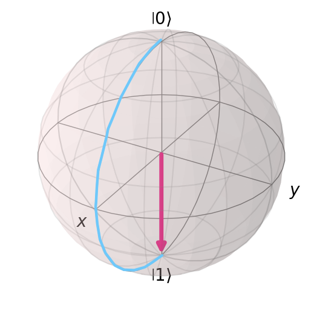
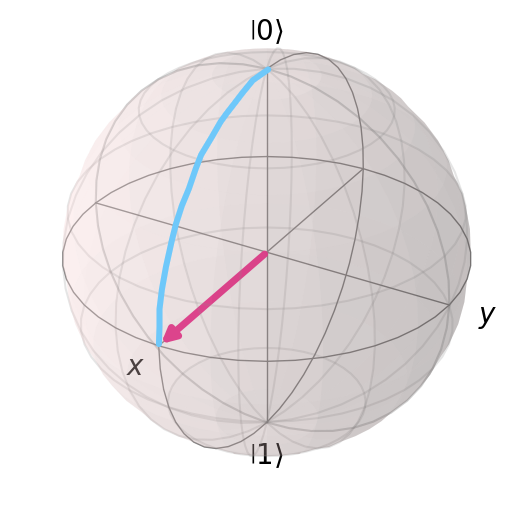
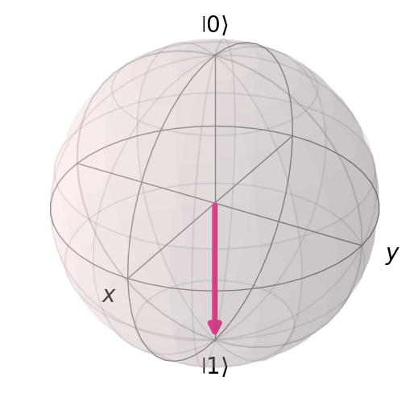
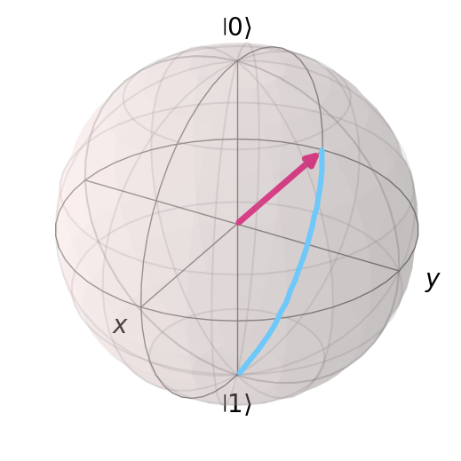
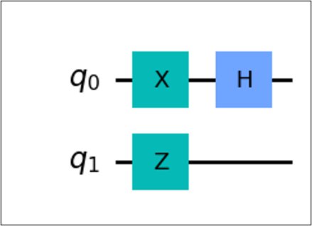

7. Introduction to Quantum Computing#
by Ross Mariano
7.1. Quantum Computation#
Before we go to quantum information and quantum computing, let us review how things are done classically.
Classically, we store information in a computer using a bit short for binary digit. A bit is either a 0 or 1, which you can think of as answering a question with yes or no. Due to this, we mathematically represent classical calculations in base 2 or binary numbers.
How many bits do we need to represent some state? Suppose we have four numbers (0,1,2,3), we can represent it as follows.
Number |
Binary |
|---|---|
0 |
00 |
1 |
01 |
2 |
10 |
3 |
11 |
We can see that we used two bits to obtain 4 different binary numbers to represent 0,1,2,3.
In general, we will need \(n\) bits to represent \(m\) different states.
Quantum computation and quantum information is the study of the information processing tasks that can be accomplished using quantum mechanical systems.
Analogous to the classical bit, we have the quantum bit or qubit in quantum computing/information. Similar to the classical bit which has a state of either 0 or 1, a qubit has states \(|0\rangle\) and \(|1\rangle\). The difference between the bit and qubit, is that the qubit is not restricted to one state. It is possible to form linear combinations of qubit states, also known as superposition.
The numbers \(\alpha\) and \(\beta\) are complex numbers. \(|\psi\rangle\) is the state of the qubit and is a vector in a two-dimensional complex vector space.
We often represent these vectors as vectors in the Bloch sphere. This is a useful tool for visualizing the state of a single qubit.
7.2. Quantum Gates#
Quantum logic gates or quantum gates are the quantum computing equivalents of the classical logic gates in classic computing. Similar to classical logic gates manipulating bits, quantum gates are used to manipulate qubits. These are the components used for creating quantum circuits.
Mathematically speaking, a quantum gate transforms the quantum state of a qubit into another quantum state. For general quantum gates, we use \(U\). These are represented as matrices.
7.2.1. Properties of Quantum Gates#
Linear property
Probability must be equal to 1
Quantum logic gates are reversible. A quantum gate \(U\) is reversible or invertible if there exists a matrix \(U^{-1}\) such that
This means that if we have an output state \(| \phi \rangle = U |\psi\rangle\), we can determine the initial state with the conjugate transpose \(U^{-1}|\phi\rangle = |\psi\rangle\).
7.2.2. One Qubit Quantum Gates#
Here are the basic gates that we use in quantum computing.
7.2.3. Identity Gate#
This gate preserves the quantum state
7.2.4. Pauli X Gate#
Also known as X, NOT, or \(\sigma_x\). This performs a bit flip on the quantum state via a 180 degree rotation along the x-axis.
Bloch sphere representation of the \(X\) gate on \(|0\rangle\). This is a \(180^{\circ}\) rotation along the \(x\)-axis.
{kind=link}
{kind=link}
7.2.5. Pauli Y Gate#
Also known as Y, or \(\sigma_y\). This performs a bit flip and phase flip on the quantum state via a 180 degree rotation along the y-axis.
This is the first gate we’ve seen that has a coefficient. Let us check if this is a valid quantum gate. We check by calculating if the total probability is 1.
\(Y\) gate is a valid quantum gate.
Bloch sphere representation of the \(Y\) gate on \(|0\rangle\). This is a \(180^{\circ}\) rotation along the \(y\)-axis.
{kind=link}
7.2.6. Pauli Z Gate#
Also known as Z, or \(\sigma_z\). This performs a phase flip on the quantum state via a 180 degree rotation along the z-axis.
Bloch sphere representation of the \(Z\) gate on some \(|\psi\rangle\). This is a \(180^{\circ}\) rotation along the \(z\)-axis.
{kind=link}
{kind=link}
7.2.7. Hadamard Gate#
Also known as \(H\). This puts the qubit into a superposition.
This gate creates a superposition between states. This is a rotation about the \(\frac{\hat{x}+\hat{z}}{\sqrt{2}}\) axis by \(180^{\circ}\).
Here we see \(H|0\rangle\) on the Bloch sphere
{kind=link}
Here we see \(H|1\rangle\) on the Bloch sphere
 {kind=link}
{kind=link}
There are other single qubit gates such as ùëÜ, ùëá, ùëÖùëã, ùëÖùëå, ùëÖùëç, ùëà etc. which also manipulate the qubit state by rotating.
In a quantum circuit, gates are usually shown as boxes with their respective labels.
7.2.8. Sample calculation#
Verify \(H|0\rangle = \frac{1}{\sqrt{2}}(|0\rangle + |1\rangle)\).
Let us check reversibility of \(H\).
We got back to our original state by applying \(H\)
7.3. Gates in series#
Multiple single gates
Try solving without calculating
We are expecting to get \(|-\rangle\). Now try calculating the matrices. We calculate the result of many single qubit gates via matrix multiplication. We call operations of gates in succession gates in series.
7.4. Gates in parallel#
Gates in parallel is seen when calculating gates between multiple qubits. The primary operation is called the tensor product.
Let us consider two qubits both initially in \(|0\rangle\). The initial state of the whole system is determined via the tensor product.
We can think of \(|00\rangle\) as analogous to the classical bitstring \(00\). For multiqubit states, we will use \(|q_0q_1\ldots q_n\rangle\), where \(n\) is the nth qubit.
7.5. Quantum Circuit Model#
7.5.1. Circuit diagram, single qubit#
Sequence of quantum gates applied to the qubits. This is the quantum equivalent of a classical circuit.
Suppose a qubit \(q\), and we want to apply gates \(X\) then \(Z\) then \(H\), i.e. \(HZX|q\rangle\). The equivalent quantum circuit is as follows.
Notice that the circuit diagram is “written backwards” compared to its mathematical expression.
We can see that there are different components of a quantum circuit. First is the input qubit \(q\), usually initialized as \(|0\rangle\). This is the qubit in which we perform our calculations on.
Second is the quantum wire, the horizontal line seen in the figure. This dictates the flow of the which goes from left to right.
Lastly, the quantum gates. As shown are the boxes with their respective labels corresponding to their operation.
7.5.2. Circuit diagram, multiple qubits#

For multiple qubits, we label the qubits as \(q_n\) where \(n\) is the nth qubit.
We can separate these via its timesteps. We see that \(q_0, q_1\) is the initial state or \(t_0\). After one timestep, we apply \(X \otimes Z\). And for the last timestep, we apply \(H\).
The equivalent mathematical expression of the circuit above is
However, notice that \(X\otimes Z\) is a \(4 \times 4\) matrix and \(H\) is a \(2 \times 2\) matrix. We cannot multiply such matrices. How do we fix this?
Notice that below the \(H\) gate, there is a blank space. This is actually the representation of the identity gate. Thus, the expression becomes,
Now assuming an initial state of \(|00\rangle\), we get a final state of
7.5.3. Multi-qubit gates#
These are quantum gates that act on multiple qubits simultaneously. Here, we introduce two qubit gates.
An example of this is the Controlled-NOT gate(CNOT, CX). This gate acts on two qubits, named the control qubit and the target qubit.
This gate performs an if-else like operation. The output of the target qubit is dependent on the control qubit.
7.5.4. CNOT gate#
The control qubit is denoted as a small dot, the target qubit is denoted by an \(X\) gate. The line implies the control.
The \(X\) gate shown here is an alternative symbol for the \(X\) gate, typically used for CNOT/CX gates.
If control is \(|0\rangle\), do nothing to target.
If control is \(|1\rangle\), apply \(X\) gate to target.
Notice that for states \(|00\rangle\), \(|01\rangle\) we get the same output. This is because the control qubit is 0, thus we do not apply anything to the target qubit.
For states \(|10\rangle\), \(|11\rangle\), we get different outputs. This is because the control qubit is 1, we flip the target qubit.
CNOT gate in matrix form
CNOT gate in outer product form
There are numerous other multi-qubits gates such as CY, CZ, Controlled Phase, etc. for 2 qubits.
Toffoli or CCNOT for 3 qubits
7.5.5. Bell state entanglement#
Now that we can construct circuits with multiple qubits and multiqubits gates. Let us try creating a circuit that creates entanglement.
A quantum state
is separable/not entangled if and only if
This means that we can separate or factor a quantum state into its basis states.
Consider the quantum state
We can see that it satisfies
Let’s try to separate them
We see that we can separate them into the Hadamard basis.
How about the following state? Can we separate the state?
We find a state that could satisfy
We can see that
If we set at least one coefficient to 0, then we won’t be able to get \(\frac{1}{\sqrt{2}}\). Thus, the state is entangled. This specific state \(|\Phi^+\rangle\) is called a Bell state.
7.5.6. Circuit form of a Bell state#
Notice the states in \(|\Phi^+\rangle\). There are two qubits \((|00\rangle, |11\rangle)\). Thus, we will need \(q_0, q_1\).
Now, notice that we have a superposition of two states. We will use a Hadamard gate.
Since we know that the state is entangled, we need an operation that entangles the two qubits. This operation will be the CNOT gate.
The Bell state circuit is then
7.6. Quantum Circuit Complexity#
Circuit complexity of a quantum circuit refers to the least number of quantum gates, relative to some universal set of quantum gates. Note that this is different from computational complexity discussed from a previous lecture.
We say that a quantum algorithm is efficient if it has polynomial circuit complexity. We quantify this using the circuit’s size, which refers to the number of gates a circuit contains.
Why does this matter? There is a natural connection between circuit complexity and time complexity. Since gates are represented by matrices, and in quantum circuits we multiply matrices, then circuit complexity and time complexity are related.
Let us consider a simple example. Say we want to get from \(|0\rangle\) to \(-|1\rangle\).
Attempt 1, we apply the operation \(YXY\)
We can see that we achieved the desired state using 3 gates
Can we do better?
Attempt 2, we apply the operation \(ZX\)
We achieved the desired state using fewer gates. Thus, we found a more efficient circuit.
For a more practical example, let us consider the Toffoli gate (also known as CCNOT). Suppose we are only allowed to use one and two qubit quantum gates. The Toffoli gate can be decomposed as follows
We can see that the Toffoli gate can be decomposed into 16 smaller gates, thus we have a circuit of size 16.
However, similar to the previous example, we can achieve a lower circuit size. It is found that we can achieve a circuit size of 7.
This means that we can restate algorithms and gates to have reduced circuit complexity and thus reduced time complexity. However, circuit complexity is generally hard to find. There is no surefire way in reducing circuit complexity.
To quantify this, we say an efficient quantum algorithm is one with a polynomial circuit complexity. Consider the quantum adder circuit. This circuit uses \(4n-2\) Toffoli gates and \(4n\) CNOT gates. Since we know we can express the Toffoli gates into 7 smaller one/two qubit gates, we get \(7(4n-2)+4n=32n-14\) qubit gates, which is polynomial (specifically linear) in \(n\). Therefore, we can say that the quantum adder circuit is an efficient algorithm.
7.7. Alternative Models of Quantum Computation#
7.7.1. Tensor Networks#
Tensor networks are networks with tensors being reprsented by nodes. Tensors are a generalization of quantities such as scalars, vectors, and multilinear maps.

Tensor networks is a method used in simulating quantum circuits. Instead of expressing quantum circuit operations as mathematical expressions, we use diagrammatic visualizations to represent the quantum circuit. This makes it advantageous as the operations can be expressed without the extra notation. The relevant mathematical operations that tensor networks perform are matrix multiplication and tensor product.

We calculate tensor networks by finding a contraction path, that is a sequence of possible multiplications that can be performed on the tensor network.
Consider the hypothetical tensor network of length \(N\).
We can multiply/contract horizontally. This will yield a tensor with \(N\) edges.
Alternatively, we can multiply/contract vertically. This will yield a tensor with no more than 3 edges.
Therefore, we found a more space efficient method in calculating the tensor network.
Tensor network methodologies work best if there is a topological structure that can be exploited.
7.7.2. Decision Diagrams#
A decision diagram is a data structure representing Boolean functions. Decision diagrams are used to simulate quantum circuits by exploiting redudancies found in quantum circuits effectively creating a more compact representation.
Consider the a statevector of 3 qubits
We see that while the statevector has 8 entries, there are only 3 unique values \(\left(0,\frac{1}{2},-\frac{1}{\sqrt{2}}\right)\). We can create a representation with only 3 output values instead of 8.
State \(|q_2q_1q_0\rangle\) |
Coefficient |
|---|---|
\(|000\rangle\) |
0 |
\(|001\rangle\) |
0 |
\(|010\rangle\) |
\(\frac{1}{2}\) |
\(|011\rangle\) |
0 |
\(|100\rangle\) |
\(\frac{1}{2}\) |
\(|101\rangle\) |
0 |
\(|110\rangle\) |
\(-\frac{1}{\sqrt{2}}\) |
\(|111\rangle\) |
0 |

7.8. References#
McMahon, D. (2007). Quantum Computing explained. Wiley-IEEE Computer Society Press.
Nielsen, M. A., & Chuang, I. L. (2010). Quantum computation and quantum information: 10th Anniversary Edition. Cambridge University Press.
Wong, T. (2022). Introduction to classical and quantum computing.
J. Biamonte and V. Bergholm, “Tensor Networks in a Nutshell,” 2017.
R. Orus, “A Practical Introduction to Tensor Networks: Matrix Product States and Projected Entangled Pair States,” Annals of Physics, vol. 349, pp. 117-158, October 2014.
Wille, R., Hillmich, S., & Burgholzer, L. (2022). Decision diagrams for quantum Computing. In Springer eBooks (pp. 1–23). https://doi.org/10.1007/978-3-031-15699-1_1